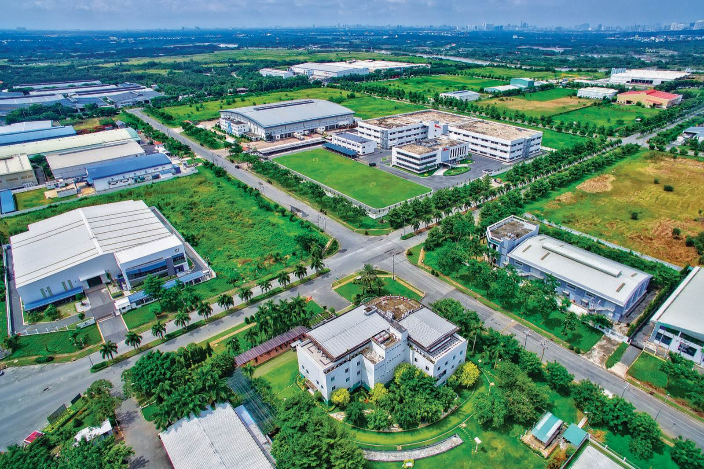

Lao động tại chỗ chưa đáp ứng nhu cầu doanh nghiệp
Nguồn: Sở LĐ-TB&XH tỉnh BR-VT (VOV)
II
PHẦN
II
Tình hình sử dụng lao động
Phần II · Tình hình sử dụng lao động
Cơ cấu lao động theo ngành (2023)
Dịch vụ chiếm tỉ trọng lớn nhất
Công nghiệp – xây dựng là thế mạnh nhờ dầu khí, điện, cảng biển
Nguồn: Cục Thống kê, số liệu sơ bộ 2023
Phần II · Tình hình sử dụng lao động
Chuyển dịch cơ cấu lao động 2019 → 2023
↓
Nông – lâm – thủy sản
20,9% → 18,2%
↑
Công nghiệp – xây dựng
32,7% → 35,9%
Chuyển dịch theo hướng công nghiệp hóa
Nguồn: Cục Thống kê, số liệu sơ bộ 2023
Phần II · Tình hình sử dụng lao động
Lao động làm việc ở đâu?

Ảnh minh họa · KCN Long Hậu
Khu công nghiệpPhú Mỹ, Mỹ Xuân, Long Sơn (hóa dầu)
Ảnh minh họa · Cảng Hải Phòng
Cảng biển & logisticsCụm cảng nước sâu Cái Mép – Thị Vải
Dầu khí & năng lượngDầu khí, điện, hóa chất: nhiều kỹ sư
Du lịch & thủy sảnVũng Tàu, Hồ Tràm, Long Hải
Phần II · Tình hình sử dụng lao động
Lao động theo thành phần kinh tế
Ngoài Nhà nước
Thu hút nhiều lao động
Có vốn đầu tư nước ngoài (FDI)
Thu hút mạnh nhờ môi trường đầu tư năng động
Nhà nước
Lao động chuyên môn: hành chính, năng lượng – dầu khí
III
PHẦN
III
Vấn đề việc làm
Phần III · Vấn đề việc làm
Thực trạng việc làm
2,89%
tỉ lệ thất nghiệp (2023)
3,29%
tỉ lệ thiếu việc làm (2023)
Thất nghiệp giảm mạnh sau dịch, nhưng thiếu việc làm tăng lại năm 2023
Nguồn: Cục Thống kê, số liệu sơ bộ 2023
Phần III · Vấn đề việc làm
Thách thức
~36.000
lao động bị ảnh hưởng việc làm (9 tháng đầu 2023)
14.952
hồ sơ xin trợ cấp thất nghiệp (9 tháng đầu 2023)
“Vừa thừa vừa thiếu”: thiếu thợ giỏi, thừa lao động phổ thông
Du lịch phụ thuộc mùa cao điểm
Dầu khí, logistics biến động theo giá dầu, thương mại thế giới
Nguồn: VOV (24/9/2023), theo Sở LĐ-TB&XH tỉnh BR-VT
Phần III · Vấn đề việc làm
Giải pháp
01
Liên kết nhà trường – doanh nghiệp, đào tạo sát nhu cầu
02
Kết nối cung – cầu lao động, tư vấn hướng nghiệp
03
Đào tạo lại, nâng kỹ năng số và kỹ năng nghề
04
Hỗ trợ doanh nghiệp giữ, mở rộng việc làm; thu hút nhân tài
Tổng kết
Kết luận
I
Lao động dồi dào, qua đào tạo nhiều nhưng thiếu tay nghề cao
II
Cơ cấu chuyển dịch sang công nghiệp – dịch vụ
III
Thất nghiệp thấp, nhưng việc làm còn nhiều biến động
Cảm ơn thầy cô và các bạn đã lắng nghe!
Câu hỏi?
Nguồn số liệu
Cục Thống kê – Bảng số liệu tỉnh Bà Rịa – Vũng Tàu 2019–2023 (nso.gov.vn)
Báo Diễn đàn Doanh nghiệp (17/6/2023), “Bà Rịa – Vũng Tàu thu hút lao động chất lượng cao”
VOV (24/9/2023), “Khoảng 36.000 lao động ở Bà Rịa – Vũng Tàu bị ảnh hưởng việc làm”
VOV, “Bà Rịa – Vũng Tàu làm gì để cân đối nguồn nhân lực?”
Ảnh (Wikimedia Commons): Toàn cảnh Vũng Tàu – Pieceofmetalwork, CC BY-SA 4.0 · Giàn khoan ngoài khơi Vũng Tàu – Genghiskhanviet, Public Domain · Bãi Trước – NDTK08, CC BY 4.0 · TP Vũng Tàu từ núi Tương Kỳ – Xuanphuocle, CC0 · Mũi Cá Mập, Côn Đảo – Terminalwlyonline, CC BY 4.0 · Ảnh minh họa: Cảng container quốc tế Hải Phòng – Nathan.cima, CC BY-SA 4.0 · KCN Long Hậu (Long An) – Luongviethoang.hcm, CC BY-SA 4.0